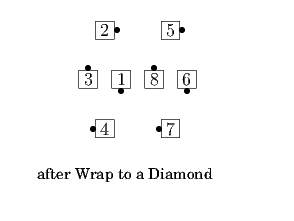
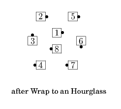
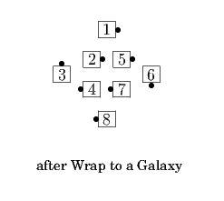
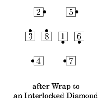
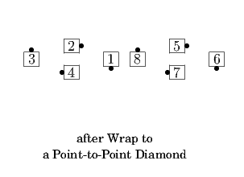
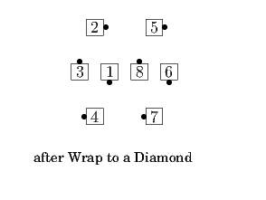
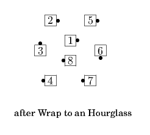
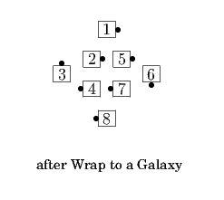
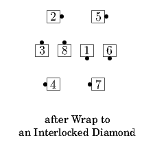
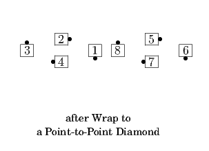

Wrap To a <formation>
From Columns; <formation> will be some kind of Diamond, Galaxy, or Hourglass:
#1 dancer: 1/2 Split Circulate and
Phantom <formation> Circulate 2.
#2 dancer: Circulate,
1/2 Split Circulate, and Phantom <formation> Circulate.
#3 dancer: Circulate 2 & 1/2.
#4 dancer: Circulate 3.
All adjust as necessary to end in the given formation.
That is, everyone does Column Circulates until they reach the front of the column, and then they do <formation> Circulates, for a total of 3 Circulates. When they reach the front of the column, they are the lead points for Twin Diamonds or an Hourglass, or the lead centers for a Galaxy or Point-to-Point Diamonds.
This call cannot be fractionalized.
 









© Copyright 2004-2017 Vic Ceder and CALLERLAB Inc., The International Association of Square Dance Callers. Permission to reprint, republish, and create derivative works without royalty is hereby granted, provided this notice appears. Publication on the Internet of derivative works without royalty is hereby granted provided this notice appears. Permission to quote parts or all of this document without royalty is hereby granted, provided this notice is included. Information contained herein shall not be changed nor revised in any derivation or publication.